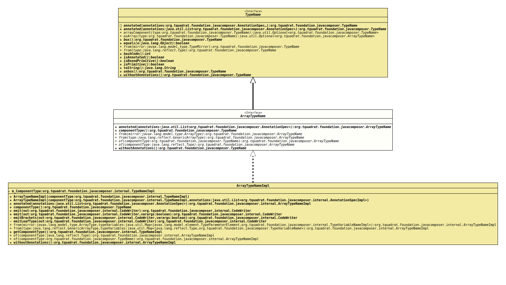

Interface ArrayTypeName
- All Superinterfaces:
TypeName
- All Known Implementing Classes:
ArrayTypeNameImpl
@ClassVersion(sourceVersion="$Id: ArrayTypeName.java 1085 2024-01-05 16:23:28Z tquadrat $")
@API(status=STABLE,
since="0.0.5")
public sealed interface ArrayTypeName
extends TypeName
permits ArrayTypeNameImpl
The specialisation of
TypeName
for array types.- Author:
- Square,Inc.
- Modified by:
- Thomas Thrien (thomas.thrien@tquadrat.org)
- Version:
- $Id: ArrayTypeName.java 1085 2024-01-05 16:23:28Z tquadrat $
- Since:
- 0.0.5
- UML Diagram
-

UML Diagram for "org.tquadrat.foundation.javacomposer.ArrayTypeName"
{kind=link}
-
Method Summary
Modifier and TypeMethodDescriptionannotated(List<AnnotationSpec> annotations) Creates a new instance for an implementation ofTypeNameas a copy of this one, but with the given annotations added.Returns this array's component type.static ArrayTypeNamefrom(GenericArrayType type) Returns an instance ofArrayTypeNamefor an array type that is equivalent totype.static ArrayTypeNameReturns an instance ofArrayTypeNamefor an array type that is equivalent tomirror.static ArrayTypeNameReturns an array type whose elements are all instances of the given component type.static ArrayTypeNameReturns an array type whose elements are all instances of the given component type.Creates a new instance for an implementation ofTypeNameas a copy of this one, but without any annotations.Methods inherited from interface org.tquadrat.foundation.javacomposer.TypeName
annotated, box, equals, hashCode, isAnnotated, isBoxedPrimitive, isPrimitive, toString, unbox
-
Method Details
-
annotated
Creates a new instance for an implementation ofTypeNameas a copy of this one, but with the given annotations added. -
componentType
Returns this array's component type.- Returns:
- The component type.
-
from
Returns an instance ofArrayTypeNamefor an array type that is equivalent tomirror.- Parameters:
mirror- The mirror for the array.- Returns:
- The new instance of
ArrayTypeName.
-
from
Returns an instance ofArrayTypeNamefor an array type that is equivalent totype.- Parameters:
type- The array type.- Returns:
- The new instance of
ArrayTypeName.
-
of
Returns an array type whose elements are all instances of the given component type.- Parameters:
componentType- The component type.- Returns:
- The new instance of
ArrayTypeName.
-
of
Returns an array type whose elements are all instances of the given component type.- Parameters:
componentType- The component type.- Returns:
- The new instance of
ArrayTypeName.
-
withoutAnnotations
Creates a new instance for an implementation ofTypeNameas a copy of this one, but without any annotations.- Specified by:
withoutAnnotationsin interfaceTypeName- Returns:
- The new instance.
-